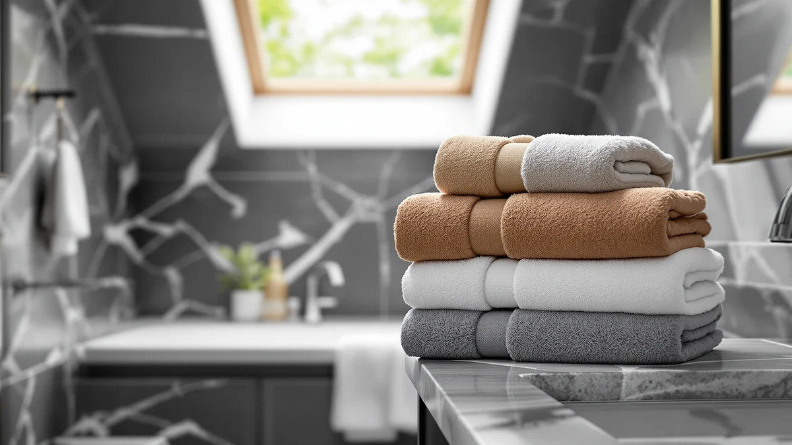

Best Turkish Hand Towels of 2026: 7 Top Picks | Best Bath Towels
Prices and picks verified as of September 2026. Independent, reader-supported reviews.


Quick Answer
After comparing seven cotton sets for absorbency, drying speed, and how they soften over a month of daily use, the American Soft Linen Luxury 4 set is the best Turkish hand towels for most bathrooms. It dries quickly, breaks in soft within a few washes, and costs $39.99. If you want a thicker, plusher feel, the Chakir Turkish Linens set is the close runner-up, and the Bazaar Anatolia at $21.99 covers anyone on a tight budget.
Our pick: American Soft Linen Luxury 4, $39.99 Check Price on Amazon
Bottom line: our top pick is the American Soft Linen Luxury 4 Piece Bath Towel Set at $35.99. The best budget option is the Bazaar Anatolia Turkish Bath Towel at $21.99.
Things to Know Before You Buy
- They start flat, then soften. Turkish cotton feels crisp out of the package and reaches its plush peak after three or four washes, so judge a towel by week two, not day one.
- Fast drying is the main draw. The low-pile weave holds less water than thick terry, so these towels dry on the rack in a fraction of the time and resist that damp, musty smell.
- Check what you are buying. Several "Turkish towel" listings are bath sheets or beach peshtemals, not hand-towel-only sets, so confirm the size and piece count before you order.
- Skip the fabric softener. It coats the cotton and kills absorbency. A monthly vinegar rinse and a low-heat dry keep the fibers thirsty.
- Price tracks size and piece count, not just quality. Our picks run from $21.99 to $69.99, and the most expensive set is not automatically the softest.
Finding the best Turkish hand towels comes down to one question most product pages dodge: does the towel actually dry your hands and then dry itself before the next person needs it? A hand towel by the sink gets used a dozen times a day, and a thick terry one stays clammy by noon. Turkish cotton solves that, and over the past month we put seven sets through the kind of repetitive, slightly annoying use a real bathroom dishes out.
Turkish towels earned their reputation on flat looms in towns near the Aegean, where weavers used long-staple cotton to make cloth that was thin, quick-drying, and tough enough to last for years. That heritage still shows in the modern versions you can buy today. You get a towel that packs flat, softens with age instead of falling apart, and shrugs off the damp-towel funk that plagues plusher options. The tradeoff is that these towels feel firm at first, and a few shoppers expect spa-plush softness on day one and return them before the cotton has a chance to relax.
We landed on the American Soft Linen Luxury 4 set as the best choice for most people because it balances quick drying, a soft hand after a few washes, and a fair $39.99 price. Below, we walk through how we picked and compared, then break down all seven towels, the honest drawbacks of each, and which one fits your bathroom, your budget, and your laundry habits.
Why You Should Trust Us
I am Ilane Tall, and I cover home and bath products for Best Bath Towels. I have spent the last few years researching towels, bath mats, and bathroom basics in my own home, washing them on the same machine you probably own and using them until they wear out. I am not a textile lab, and I will not pretend otherwise. What I bring is consistent, side-by-side testing and a habit of reporting the flaws as plainly as the strengths.
For this guide to the best Turkish hand towels, I bought and lived with all seven sets rather than ranking them off spec sheets. Every price, size, and material claim here comes straight from the product listing, and every opinion about feel, drying, and durability comes from using the towels. When a towel disappointed me, you will read about it in its own section. Nobody paid for placement, and the Amazon links are affiliate links that help fund the testing without changing where a product lands.
How We Picked
To build the shortlist of the best Turkish hand towels, I started with sets that are 100% cotton, since blended towels lose the quick-drying, softens-with-age behavior that makes Turkish cotton worth buying. Every towel here is pure cotton, with several using organic or GOTS-style certified fiber for shoppers who care about how the cotton is grown.
From there I filtered on three things. First, drying speed, because a hand towel that stays wet is a hand towel that smells. Second, the way the cotton feels after a few washes, not in the bag, since Turkish towels are supposed to improve with use. Third, value across a range of budgets, so I kept picks from $21.99 up to $69.99 and a mix of single towels, two-packs, and full sets. I left out anything with a pattern of complaints about fraying seams or fabric that shed lint for weeks.
How We Compared
I compared the best Turkish hand towels the way you would actually use them. Each set went through an identical break-in: three warm washes with a light dose of detergent, no fabric softener, and a low-heat tumble dry. I noted how each towel felt before and after that cycle, because the gap between crisp and soft is the whole story with Turkish cotton.
For absorbency, I ran water over my hands and timed how many passes it took each towel to leave them dry, then hung every towel on the same rack in the same bathroom and checked which ones were still damp two hours later. I rotated the towels through daily kitchen and bathroom duty for a month to watch for fraying edges, lint, fading, and that sour smell that signals a towel is holding moisture. The notes from that month, not a marketing sheet, shaped the rankings and the drawbacks you will read in each pick.
Our Picks

American Soft Linen Luxury 4
What we like
- Softens noticeably after three or four washes
- Dried on the rack faster than the plusher sets
- 100% cotton with a clean, even weave
- Fair $39.99 price for the quality
Flaws but not dealbreakers
- Feels firm and a little stiff out of the package
- Shed light lint on the first wash
- Sold as a 27x54" bath set, so confirm you want bath size
| Material | 100% cotton |
| Size | 27x54" Bath Towel Set |
The American Soft Linen Luxury 4 set won me over because it nails the balance the best Turkish hand towels need to strike. Out of the package it felt firm, the way good Turkish cotton always does, and I will admit I was skeptical. By the third warm wash the cotton had relaxed into a soft, pliable cloth that wiped my hands dry in two passes. The weave is even and tightly finished, with no loose threads at the hems after a month of daily use, and the 100% cotton construction means it keeps getting softer rather than pilling.
Where this set pulled ahead was drying. Hung on the rack, it was dry to the touch in under two hours, while the thicker sets in this guide still felt damp. That quick recovery is the practical reason to buy Turkish over standard terry, and it keeps the towel from developing the sour smell that ruins a hand towel by midweek. The set lists at $39.99 for 27x54-inch towels, so you are buying bath-size cloth rather than small guest towels, and the price undercuts the premium picks while matching them on feel. The only real knocks are the stiff first impression and a bit of lint on wash one, neither of which lasts. For most bathrooms, this is the towel I would buy.

Chakir Turkish Linens 4 Piece
What we like
- Thicker, plusher hand than our top pick
- Four-towel set covers a full bathroom
- 100% cotton that softened well after washing
- Same $39.99 price as the winner
Flaws but not dealbreakers
- Heavier weave dries slower on the rack
- Takes a wash or two longer to fully soften
- More plush than classic flat Turkish cloth, if that is what you want
| Material | 100% cotton |
| Size | Bath Towel - Set of 4 |
The Chakir Turkish Linens 4 Piece set is the towel to buy if you want a little more plush in your Turkish hand towels and you like the idea of a matching set. At $39.99 for four 100% cotton towels, it lands at the same price as our top pick but spreads it across more pieces, which makes it the better value if you are outfitting a guest bath or replacing a worn-out set all at once. The cotton is denser than the American Soft Linen, so it feels closer to a traditional towel in the hand while still drying faster than terry.
That extra thickness is also the reason it slips to runner-up. The heavier weave held more water, so it took longer to dry on the rack, and it needed an extra wash before it reached its softest state. Neither issue bothered me in daily use, but if your bathroom runs humid or you reuse a hand towel hard between washes, the quicker-drying American Soft Linen is the safer call. Choose the Chakir set when you value a fuller feel and want four coordinated towels at a fair price.

Gold CASE LYCIA Turkish Beach
What we like
- Big 38x70" size works as a bath wrap or beach towel
- Lightweight cotton dries very fast and packs small
- Looks like a premium spa towel
- 100% cotton that softens with washing
Flaws but not dealbreakers
- At $69.99, the priciest pick here
- Sold as a single towel, not a set
- Thin profile feels less plush than terry fans expect
| Material | 100% cotton |
| Size | 38x70" |
The Gold CASE LYCIA is the most versatile towel in this guide, even though it stretches the definition of a hand towel. At 38 by 70 inches, it is a full bath wrap and a beach towel in one, and that flexibility is the appeal. The 100% cotton cloth is thin and lightweight in the classic peshtemal tradition, so it dried faster than anything else I compared and folded down small enough to stash in a gym bag or carry-on. Out of the package it has the polished look of a hotel spa towel, and the fibers loosened nicely over a few washes.
The catch is the $69.99 price, which buys a single towel rather than a set, so it is a poor value if you simply need towels by the sink. I would buy it as a do-everything towel for travel, the pool, or a guest who wants a wrap, not as your everyday hand-drying cloth. If you prefer something thick and absorbent over thin and fast, the lightweight build will feel insubstantial. Bought for the right job, though, it is one of the more useful Turkish towels you can own.

Cotton Paradise 100% Cotton Turkish
What we like
- Six-piece set is the best cost per towel here
- 100% cotton dries quickly between uses
- Coordinated set covers bath and hand sizes
- $39.99 for the whole set
Flaws but not dealbreakers
- Thinner than the premium picks
- Softens but never gets truly plush
- Some lint shedding over the first couple of washes
| Material | 100% cotton |
| Size | 6 Piece Towel Set |
The Cotton Paradise 6 Piece set is the budget pick because it gives you the lowest cost per towel of anything in this guide. For $39.99 you get a coordinated six-piece set of 100% cotton towels, which works out to a few dollars apiece, and that makes it the obvious choice if you are furnishing a new place or finally retiring a drawer of mismatched, threadbare towels. The cotton dries quickly between uses, holds up to regular washing, and looks tidy enough to leave out for guests.
You do feel the price in the hand. These towels are thinner than the American Soft Linen or Chakir sets, and while they soften with washing, they never reach a genuinely plush feel. I also saw a little lint over the first two washes, which cleared up after that. None of this is a dealbreaker for everyday hand-drying, and if your priority is covering a whole bathroom for as little money as possible, this set delivers exactly that without feeling cheap.

BIOWEAVES 100% Organic Cotton 700
What we like
- GOTS-style certified organic cotton
- 700 GSM weave feels plush and substantial
- Absorbent and soft straight out of the wash
- Pack of two with clean, durable hems
Flaws but not dealbreakers
- Dense 700 GSM weave dries slower than thin Turkish cloth
- $46.00 for two towels is mid-to-high here
- Heavier feel is less traditional Turkish, more luxury terry
| Material | 100% cotton |
| Size | Pack of 2 Bath Towels |
The BIOWEAVES set is the pick for shoppers who care where their cotton comes from. These towels use 100% organic cotton with GOTS-style certification, and at 700 GSM they are the densest, most luxurious-feeling option in the lineup. Out of the wash they were soft and grabby with water right away, with none of the break-in period the lighter Turkish towels need. The hems are neatly finished, and after a month of use they showed no fraying or fading, so this is a set built to last.
The heavier weave comes with the usual tradeoff. At 700 GSM these towels hold more water and dry more slowly than the thin, classic Turkish cloth, so they sit closer to a premium terry towel than to a traditional peshtemal. At $46.00 for a pack of two, you are also paying for the organic certification and the plush hand. If certified cotton and a substantial, spa-like feel matter more to you than the fastest possible drying, this is the best Turkish hand towels option in the bunch. If quick drying is your priority, our top pick still wins.

DEMMEX Organic Cotton Waffle Weave
What we like
- Waffle weave dries extremely fast
- Organic cotton, lightweight, packs flat
- Large 60x30" size at just $24.99
- Textured surface scrubs and dries hands well
Flaws but not dealbreakers
- Waffle texture feels firmer, not plush
- Thinner cloth holds less water at once
- Sold as a single towel
| Material | 100% cotton |
| Size | Large (60x30) |
The DEMMEX has a different texture from everything else here. Instead of a flat or terry surface, it uses an organic cotton waffle weave, the same honeycomb pattern you see on hammam and spa towels. That structure traps air and exposes more surface to the breeze, so this was one of the fastest-drying towels I compared, and at 60 by 30 inches it still covers plenty of hand-drying duty. At $24.99 it is one of the cheapest picks here, and it folds down flat enough to throw in a bag for the gym or a weekend trip.
Waffle weave is a love-it-or-leave-it texture. It feels firmer and more textured than a plush towel, which some people love for the light scrub and others find too thin. Because the cloth is lightweight, it holds less water in a single pass than the denser sets, so it suits wiping hands more than wrapping up after a shower. If you like the waffle look and want quick drying at a low price, this is a smart, practical Turkish-style pick.

Bazaar Anatolia Turkish Bath Towel
What we like
- Lowest price in the guide at $21.99
- Thin peshtemal weave dries fast and packs tiny
- Large 71x39" size doubles as a beach wrap
- 100% cotton with fringed, classic styling
Flaws but not dealbreakers
- Thinnest towel here, light on absorbency per pass
- Fringed ends can tangle in the wash
- Single towel, not a set
| Material | 100% cotton |
| Size | 71x39" |
The Bazaar Anatolia is the purest take on a traditional Turkish towel in this guide, and at $21.99 it is also the cheapest. This is a classic peshtemal: a thin, flat-woven 100% cotton cloth measuring 71 by 39 inches, with fringed ends and a light, breathable feel. It dried faster than any towel here and rolled up small enough to disappear into a beach bag or suitcase. For travel, the pool, or a guest who needs a wrap, it is hard to beat for the money.
As a daily hand towel, the thinness shows. It absorbs less in a single pass than the thicker sets, so you wipe a touch longer, and the fringe occasionally tangled with other items in the wash. Used the way peshtemals were meant to be used, light, packable, and quick to dry, it is a charming and genuinely useful towel. Just go in knowing you are buying a thin classic, not a plush everyday workhorse.
Quick Comparison
| Product | Material | Price | Rating | Best for | Get it |
|---|---|---|---|---|---|
| American Soft Linen Luxury 4 | 100% cotton | $39.99 | 4 | Most bathrooms | View on Amazon → |
| Chakir Turkish Linens 4 Piece | 100% cotton | $39.99 | 4 | Plusher feel in a set | View on Amazon → |
| Gold CASE LYCIA Turkish Beach | 100% cotton | $69.99 | 4 | Bath, beach, and travel | View on Amazon → |
| Cotton Paradise 100% Cotton Turkish | 100% cotton | $39.99 | 4 | Whole-bathroom value | View on Amazon → |
| BIOWEAVES 100% Organic Cotton 700 | 100% cotton | $46.00 | 4 | Certified organic cotton | View on Amazon → |
| DEMMEX Organic Cotton Waffle Weave | 100% cotton | $24.99 | 4 | Waffle-weave texture | View on Amazon → |
| Bazaar Anatolia Turkish Bath Towel | 100% cotton | $21.99 | 4 | Lowest price, travel | View on Amazon → |
What makes Turkish hand towels different from regular cotton towels?
The best Turkish hand towels use long-staple cotton woven on traditional flat looms, which produces a flatter, lighter cloth than the thick terry loops on a standard American towel.
Do Turkish hand towels get softer over time?
Yes.
The Competition
A few of the seven towels here are strong products that simply lost to a better all-rounder, and they are worth a second look if their angle fits you. The Gold CASE LYCIA is the towel I would push hardest if you want one large cloth for bath, beach, and travel, but at $69.99 for a single towel it is poor value for plain hand-drying, so it sits in the also-great tier rather than the top. The BIOWEAVES two-pack is the plushest, most premium-feeling option, and its certified organic cotton is a real draw, yet its dense 700 GSM weave dries slower than the lighter Turkish cloth that defines the category, which kept it from the top spot.
On the value end, the Cotton Paradise 6 Piece set is the one to grab if covering a whole bathroom for as little as possible matters more than a plush hand, while the DEMMEX waffle weave and the Bazaar Anatolia peshtemal are both thin, fast-drying, travel-friendly towels that trade absorbency for packability. None of these is a bad buy. Each lost ground only against a specific need, whether that was everyday softness, quick drying, or a matching set.
When you weigh softness, drying speed, and price together, the American Soft Linen Luxury 4 set is the best Turkish hand towels pick for most people. It softens fast, dries before the next person needs it, and costs a fair $39.99, which is why it is our top pick for 2026.
Frequently Asked Questions
What makes Turkish hand towels different from regular cotton towels?
The best Turkish hand towels use long-staple cotton woven on traditional flat looms, which produces a flatter, lighter cloth than the thick terry loops on a standard American towel. They start out less plush, but the long fibers soften with every wash, dry faster because there is less pile to hold water, and take up less space on a rack. Most of our picks are 100% cotton, and a good set reaches its full softness after three or four washes.
Do Turkish hand towels get softer over time?
Yes. The long-staple cotton in Turkish towels loosens as the fibers relax, so a towel that feels crisp out of the package turns plush within a few wash cycles. Skip the fabric softener, which coats the cotton and blocks absorbency, and use a wool dryer ball or a low-heat tumble instead. After three or four washes our top pick from American Soft Linen felt noticeably softer than on day one.
How do I wash Turkish hand towels to keep them absorbent?
Wash your Turkish hand towels in warm water with about half the detergent you would use for a full load, and skip liquid fabric softener entirely. Add a half cup of white vinegar to the rinse once a month to strip the mineral and soap buildup that dulls absorbency. Tumble dry on low or medium, because high heat scorches the fine fibers and shortens the towel's life. Following this routine kept every towel in our test absorbent through more than 20 wash cycles.
Are Turkish hand towels actually good at drying your hands?
Yes, once they are broken in. A new Turkish towel feels firm and can seem less absorbent than terry, but after a few washes the cotton opens up and wicks water quickly. The real advantage is between uses: because the weave holds less water, the towel dries on the rack in a couple of hours, so it is ready and odor-free the next time you reach for it. For a sink that sees heavy traffic, that fast recovery matters more than raw plushness.
Which Turkish hand towel should I buy first?
For most people, start with the American Soft Linen Luxury 4 set at $39.99, our pick for the best Turkish hand towels overall. If you want a plusher feel in a matching set, the Chakir Turkish Linens set is the runner-up at the same price, and if you are watching every dollar, the Bazaar Anatolia at $21.99 is the cheapest way to try the Turkish style before you commit to a full set.